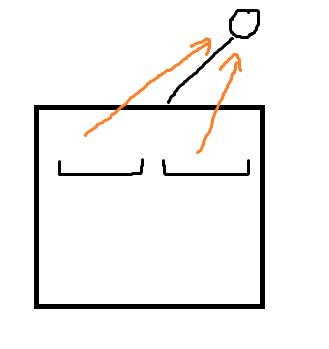

2021-2022 ICPC Asia Pacific - Yokohama Regional 赛后小结
比赛链接：https://qoj.ac/contest/912
乐了，贵队被同机房两个人差点打爆了。
A 听队长说公式就在题面上，他直接写了过了。
我看了 B ，但是当时一直在想贪心，然后没有秒掉，后面队长来了似乎秒了，和队长交流听不懂他在说啥，相信。
后面队长没过样例，一看，他看错题了，但是他说的很对，直接暴力就是对的，所以我直接上机过了。
J Imakf 会了，上机写过了。此时一个小时 18 min 。
然后我过了 B 后在想 G ，发现无法直接维护树的状态进行 dp ，原因是很难保证一个点不会既成为一个点的父亲，也成为这个点的儿子，在思考良久后，不得已启用了 Purfer 序列来做这个题目（不是我自大，我个人认为训了也有一些场了，什么时候的签至多用到什么样的算法我还是有点数的，一个前期计数用到 Purfer 序列推式子是我没想到的，当然，也有可能是我太菜了）
结果在用了 Purfer 序列十几分钟后，发现式子非常好看，然后最后发现可以额外添加一个 $0$ 号点来解决根的问题后，直接上了，一个半小时过了。
C 队长秒了，两个小时的时候过了。
D 和 Imakf 讨论，Imakf 声称和 CF 之前某个题很像，那个题我赛时过了，赛后补了，所以他直接丢给我了，我在思考到后面，发现如果用 CF 那个题目的思考过程来想会非常别扭，涉及讨论，于是尝试用区间来想，发现这样想非常简单，2 个小时 14 min AC 。
然后开始坐牢，Imakf 会 I，三个半小时过了这题。
期间和队友讨论 F 和 H ，H 我其实有想过只关心某几个串，然后随一下，但是我没有想到对的道理，也没有成形做法，所以跳过这个做法，但是其实应该和队长说一下的，说不定队长就编出正解了。
然后和 Imaka 讨论 F，会了一维是 $<p$ 的做法，现在不会两个 $<p$ 的那一段，当时我们陷入了几个问题：
- 我们两个人都以为这一段可以是长方形，导致没有启发性的想到对称。
- 我期间独立尝试过 $(a+bi)(b+ai)$ 的对称，可惜最终算出：$2ab+(a^2+b^2)i$ 导致最后都没有做出来，直到赛后和别人讨论，恍然大悟，痛心不已，但是就算搞出来了，我能想到 FFT 求系数吗，打个大大的问号。
- 我们两个人都没想过几何意义，想想，这玩意不就是因为互为补角，所以乘出来大部分是纯虚数。
所以 F 最后都没干出来，但是队长 H $O(2^{30})$ 过了，此时四个小时。
此时队长让我上 F 的 MTT + 多点求值 + 分治 NTT ，我拒绝了，我觉得我绝对写不出来。赛后来看，我们当时并没有好的决策，但其实 F 是有机会能想出来的，只是这个机会不属于我，自从我写出 $2ab+(a^2+b^2)i$ 开始。我只能说，如果我同意上机，只是因为我不想背锅，但其实我个人认为，这完全没有上机的道理，我完全写不出来，而且我也不会，我并不知道这玩意能不能算虚树。
最后遗憾离场。
部分题解：
B
枚举一下一等奖和二等奖，剩下的部分排个序取三等奖。
时间复杂度：$O(100^3*\log{100})$
G
首先由 Purfer 序列有公式：$\frac{(n-2)!}{(d_{1}-1)!(d_{2}-1)!…(d_{n}-1)!}$ 。
如果忽略掉根，那么可以得到每个节点的 $(d-1)$ 就是儿子数量。
但现在有个问题，这样无法保证一定有一个儿子 $>$ 自己，所以考虑容斥，枚举有多少个点不满足这个要求。
假设枚举了一个点是不满足要求的，那考虑给这个点钦定儿子，这是可以在 dp 过程中完成的。
考虑钦定完后统计方案，我们会得到一个个连通块。
考虑某个连通块的所有叶子分别要求有 $c_1,…,c_{k}$ 个儿子，那么把这个连通块缩成一个点，然后考虑其的度数，则为 $1+\sum c_{i}$ 。
故缩成一个点后的 Purfer 计数贡献为 $\frac{1}{(\sum c_{i})!}$ ，但是显然给了这个连通块边还不够，还需要给每个叶子分派边，这个系数为 $\binom{\sum c_{i}}{c_{1},…,c_{k}}$ ，两者乘一下，正好是 $\frac{1}{c_{1}!…c_{k}!}$ 。
所以我们得到了一个方案的计数贡献就是：$\frac{(\mathrm{连通块个数-2})!}{c1!…ck!}$ 。
可以注意到，这个时候贡献就和连通块的具体形态没有关系了，只和叶子的度数有关，因此我们只要知道每个点是不是叶子就行了。
当然，还有儿子的次序问题，这个简单，枚举的过程中如果发现某个点有儿子给系数 $*2$ 就行了。
不过还有个问题，上面的讨论都没有讨论根节点，所有的一切在根节点的时候都会变，原因是根节点没有父节点，尤其是连通块的部分，我们需要知道父节点的连通块有多大，爆了。
但其实很好解决，就是来一个 $0$ 节点作为整棵树的根，和原来的根连一下就行了，而这个 $0$ 号节点不会参与任何的连通块，所以就不会出现这个问题了。
时间复杂度：$O(n^3)$
1 |
|
好，看完别人做法，唐完了。
怎么想了半个小时没想出来怎么解决既是父亲又是儿子的问题的。
不妨先把第二个限制丢了，考虑最传统的状态设计：$f_{i,j,k}$ ，需要 $j$ 个儿子，有 $k$ 个节点需要父亲。
只需要先决定当前的点是谁的儿子，那么此时合法的父亲只有 $k-1$ 个，原因是这个连通块的根不能作为其父亲。
而第二个限制只需要从大到小做就可以解决了。
做完了，时间复杂度：$O(n^3)$ 。
唐完了，怎么不会直接做的做法啊，唐完了。
不过我的做法还是有点可取之处的，他们这个做法是关于儿子平方的，而我的做法是关于儿子线性的，不过也就优这一点了，乐麻了。
代码：咕咕咕。
C
注意到输出串你其实是知道的，所以可以设 $dp[i][j]$ 表示需要至多多少条指令，使得从前往后恰好输出长度为 $i$ 的前缀，从后往前，在输出这些指令之前，恰好输出了长度为 $j$ 的前缀。
然后转移就行了。
我一开始以为，这个做法依赖一串指令从前往后和从后往前所添加的字符个数都是唯一的，原因是这样对于一串指令而言，$i,j$ 是固定的。
但我后面发现这并不重要，如果对于一个指令串有多个合法的 $i,j$ ，那只需要保证每一对合法的 $i,j$ 都能考虑到这个指令串就行了。
D
D 首先有几个观察：
- 一个区间中的一个点是这个树的根当且仅当其是这个点的最大值点。
- 一个点能为根的区间当且仅当这个区间经过他且是他在笛卡尔树上子树的子集。（证明可以考虑在笛卡尔树上从上往下归纳）
- 两个点能连边则这两个点在笛卡尔树上是父子关系。（反证法，在两个点连边的瞬间，考虑两点 LCA ，则一个在左子树内，一个在右子树内，则根据第二条，两者区间不相邻，矛盾）
所以考虑在笛卡尔树上考虑这个问题，每个点会向祖先连边，限制有点奇怪，如果直接在树上考虑直径所有可能的形态，像 ，感觉会有点麻烦，而且不够直观。
首先如果这个直径是从祖先向儿子的，没有转折，则显然是根节点的子树（也就是整棵树）的最大深度。
现在考虑这个直径会折一下，LCA 即最浅深度的点在 $x$ ，考虑两条路径在连向 $x$ 的那个瞬间，是不是可以看成是 $x$ 子树内的两个区间向他连边，这两个区间不能相交，然后两条路径长度就是这两个区间所能构造的最大深度。
可以注意到，这两个区间只要不交且不包含 $x$ ，其可以在子树内任意位置，这说明我们考虑的非常的对，任意性拉满了。

但是考虑，如果有空隙，我们尝试把区间和这个空隙合并，如果更新了根，则路径变长不亏，否则就算没更新根，也是不亏（事实上整棵树在保留原有结构的情况下扩展，最大深度只会变大，不会变小，显然是不劣的，无论怎么扩展）。
所有可以证明，这两个区间要么是两个儿子，要么占满了其中的一个儿子。
所以考虑 $dp[i][0/1]$ 表示 $i$ 子树内有 $1/2$ 个区间的最大长度和，或者换句话说，将 $i$ 的子树分成 $1/2$ 个树的最大深度和。
然后转移一下就行了，时间复杂度：$O(n)$ 。
1 |
|
H
非常牛，赛时 $2^30$ 干过去了，$2^30$ 就不介绍了，压位 + 优秀的搜，队长伟大，无需多言。
这里说一下正解。